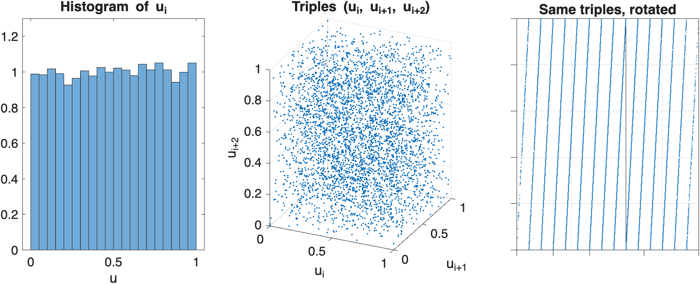
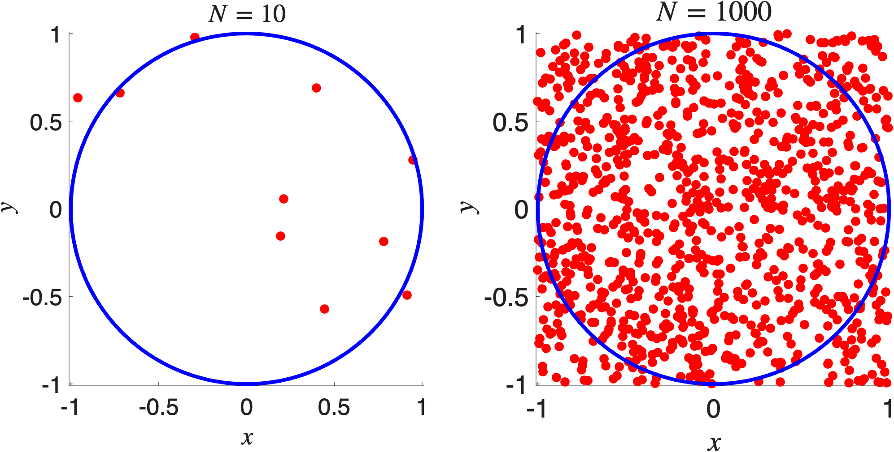
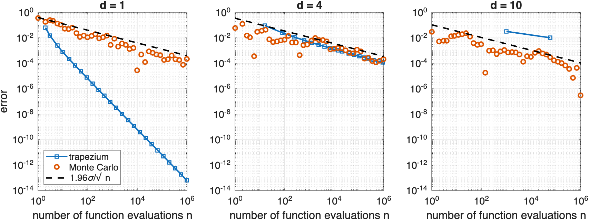
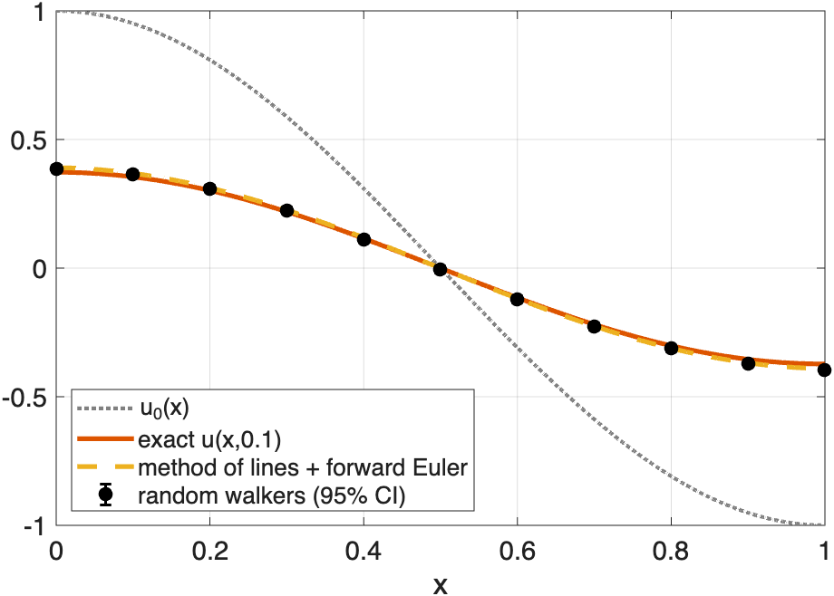

MATH2731 Computational Mathematics II
The two meet at the end: random walkers solve the heat equation.
\[ \frac{\partial u}{\partial t} = \alpha \frac{\partial^2 u}{\partial x^2}, \quad x \in [0,L], \quad t > 0, \qquad \alpha > 0 \]
Uniform grid of \(N\) nodes: \[ x_j = (j-1) \Delta x, \quad j = 1, \dots, N, \quad \Delta x = \frac{L}{N-1}, \qquad u_j(t) \approx u(x_j, t) \]
so \(x_1 = 0\) and \(x_N = L\). Centred difference (Chapter 4): \[ \frac{\partial^2 u}{\partial x^2}(x_j,t) \approx \frac{u_{j-1}(t) - 2u_j(t) + u_{j+1}(t)}{(\Delta x)^2} \]
\[ \frac{d u_j}{dt} = \alpha\frac{u_{j-1} - 2u_j + u_{j+1}}{(\Delta x)^2}, \quad j = 1,\dots, N, \qquad u_0=u_1, \;\; u_{N+1} = u_N \]
For \(\mathbf{u}(t) = (u_1(t), \dots, u_N(t))^\top\): \(\;\dfrac{d\mathbf{u}}{dt} = \alpha \mathbf{A} \mathbf{u}\), with the \(N\times N\) matrix \[ \mathbf{A} = \frac{1}{(\Delta x)^2} \begin{pmatrix} -1 & 1 & & & \\ 1 & -2 & 1 & & \\ & \ddots & \ddots & \ddots & \\ & & 1 & -2 & 1\\ & & & 1 & -1 \end{pmatrix} \] the discrete Laplacian with Neumann boundary conditions.
\[ \mathbf{u}_{n+1} = \mathbf{u}_n + \Delta t \, \alpha \mathbf{A} \mathbf{u}_n \]
Why? The eigenvalues of \(\alpha\mathbf{A}\) lie in \(\big[-4\alpha/(\Delta x)^2,\, 0\big]\), and forward Euler applied to \(\dot u = \lambda u\) needs \(-2 \le \Delta t\lambda \le 0\) (Chapter 5).
Halving \(\Delta x\) forces \(\Delta t\) to shrink by a factor of \(4\)!
\[ \mathbf{u}_{n+1} = \mathbf{u}_n + \Delta t \, \alpha \mathbf{A} \mathbf{u}_{n+1} \quad\iff\quad (\mathbf{I} - \Delta t \,\alpha \mathbf{A})\,\mathbf{u}_{n+1} = \mathbf{u}_n \]
Plan:
Computers are deterministic, so they produce pseudorandom numbers: \[ s_{i+1} = g(s_i), \qquad u_i = h(s_i) \in (0,1) \]
rng(1) in Chapter 4)Linear congruential generator (LCG) \[ x_{i+1} = (a x_i + c) \bmod m, \qquad u_{i+1} = \frac{x_{i+1}}{m}, \] with integers \(a\) (multiplier), \(c\) (increment) and \(m\) (modulus).
\(a=6\), \(c=0\), \(m=11\), seed \(x_0 = 1\) \[ 1, 6, 3, 7, 9, 10, 5, 8, 4, 2, 1, 6, \ldots \qquad \text{(period 10)} \] With \(a=3\): \(\; 1, 3, 9, 5, 4, 1, \ldots \;\) (period only \(5\)).
\(a = 65539 = 2^{16}+3\), \(\; c=0\), \(\; m=2^{31}\): supplied with IBM mainframes in the 1960s

All triples \((u_i, u_{i+1}, u_{i+2})\) lie on just \(15\) planes!
\[ a^2 = 2^{32} + 6\cdot 2^{16} + 9 = 2^{32} + 6a - 9 \]
Since \(2^{32}\) is a multiple of \(2^{31}\): \[ x_{i+2} = a^2 x_i \bmod 2^{31} = (6 a x_i - 9 x_i) \bmod 2^{31} = (6x_{i+1} - 9x_i) \bmod 2^{31} \]
So \(9x_i - 6x_{i+1} + x_{i+2}\) is a multiple of \(2^{31}\): \[ 9u_i - 6u_{i+1} + u_{i+2} = k \in \mathbb{Z} \]
LHS \(\in(-6, 10)\), so \(k \in \{-5, \ldots, 9\}\): 15 planes.
n = 3e4;
x = zeros(n, 1); x(1) = 1; % seed
for i = 1:n-1
x(i+1) = mod(65539*x(i), 2^31); % exact: 65539*x(i) < 2^53 (Chapter 1)
end
u = x/2^31;
plot3(u(1:end-2), u(2:end-1), u(3:end), '.', 'MarkerSize', 2)
view([2 3 0]) % look along the planesPractical lessons:
\(H_0\): \(u_1, \ldots, u_n\) are independent samples from the uniform distribution on \([0,1]\)
Chi-squared distribution If \(Z_1, \ldots, Z_\nu\) are independent standard normal random variables, then \(Z_1^2 + \cdots + Z_\nu^2\) has the chi-squared distribution with \(\nu\) degrees of freedom, \(\chi^2_\nu\).
\[ T = \sum_{j=1}^k \frac{(n_j - n/k)^2}{n/k} = \frac{k}{n}\sum_{j=1}^k \left(n_j - \frac{n}{k}\right)^2 \]
Under \(H_0\), \(T\) converges in distribution to \(\chi^2_{k-1}\) as \(n\to\infty\).
Intuition: \(n_j \approx\) normal with mean and variance \(\approx n/k\), so each term \(\approx Z^2\). The constraint \(n_1 + \cdots + n_k = n\) removes one degree of freedom.
chi2inv(1 - alpha, k - 1)\(n = 1000\) numbers, \(k = 10\) bins, expected count \(100\)
| Bin \(j\) | 1 | 2 | 3 | 4 | 5 | 6 | 7 | 8 | 9 | 10 |
|---|---|---|---|---|---|---|---|---|---|---|
| \(n_j\) | 98 | 104 | 112 | 107 | 94 | 95 | 108 | 97 | 96 | 89 |
\[ T = \frac{10}{1000}\left[(-2)^2 + 4^2 + 12^2 + 7^2 + (-6)^2 + (-5)^2 + 8^2 + (-3)^2 + (-4)^2 + (-11)^2\right] = 4.84 \]
chi2inv(0.95, 9) \(\approx 16.92\), and \(4.84 < 16.92\): the sample passes.
\(n = 3\times 10^5\) numbers from RANDU, seed \(x_0 = 1\) Single values, \(k = 10\) bins: \(T \approx 4.3 < 16.92\). RANDU passes.
Triples \((u_1,u_2,u_3), (u_4,u_5,u_6), \ldots\) in \(k^3 = 1000\) cubes of side \(0.1\):
Tests must probe independence, not just the histogram. Test suites (e.g. TestU01) apply hundreds of tests.
CDF \(F(x) = \mathbb{P}[X\le x]\); PDF \(f = F'\).
Inverse transform method Let \(U\) be uniform on \([0,1]\) and \(F\) a continuous, strictly increasing CDF. Then \(X = F^{-1}(U)\) has CDF \(F\).
Proof. \(F\) is increasing, so \(F^{-1}(U)\le x \iff U \le F(x)\). Hence \[ \mathbb{P}[X \le x] = \mathbb{P}[U \le F(x)] = F(x). \quad\blacksquare \]
Exponential distribution \(F(x) = 1 - e^{-\lambda x}\) for \(x \ge 0\), so \(F^{-1}(u) = -\log(1-u)/\lambda\).
\(1-U\) is also uniform, so: X = -log(rand(n, 1))/lambda
randnPoints uniform on \([-1,1]^2\) land in the unit disc with probability \(\pi/4\):

\[ \pi = \int_{-1}^1 \int_{-1}^1 \mathbb{1}\{x^2+y^2\le 1\}\,dy\,dx \approx 4\times(\text{fraction of points in the disc}) \]
\[ \mu = \mathbb{E}[A(X)] = \int_{\mathbb{R}^d} A(x) f(x)\,dx, \qquad X \text{ with PDF } f \]
For independent \(X_1, \ldots, X_n\) distributed like \(X\), the Monte Carlo estimator of \(\mu = \mathbb{E}[A(X)]\) is \[ \hat{\mu}_n = \frac{1}{n}\sum_{i=1}^n A(X_i). \]
Properties of the Monte Carlo estimator Suppose \(\mathbb{E}|A(X)| < \infty\). Then:
\(z_{1-\alpha/2}\): the \((1-\alpha/2)\)-quantile of \(\mathcal{N}(0,1)\), so \(\mathbb{P}[|Z| \le z_{1-\alpha/2}] = 1-\alpha\): \[ \mathbb{P}\left[ |\hat\mu_n - \mu| \le z_{1-\alpha/2}\frac{\sigma}{\sqrt{n}} \right] \approx 1-\alpha \]
norminv(1 - alpha/2)Replace \(\sigma\) by the sample standard deviation \(\hat\sigma_n\) (std):
\(\mu = \mathbb{E}[U^2] = \int_0^1 x^2\,dx = \tfrac13\) \(\sigma^2 = \mathbb{E}[U^4] - \mu^2 = \tfrac15 - \tfrac19 = \tfrac{4}{45}\): the \(95\%\) half-width is \(\approx 0.58/\sqrt{n}\).
\[ I = \int_{[0,1]^d} g(x)\,dx \]
| Method | Error with \(n\) evaluations |
|---|---|
| Trapezium | \(O(n^{-2/d})\) |
| Simpson | \(O(n^{-4/d})\) |
| Monte Carlo | \(O(n^{-1/2})\), independent of \(d\) |
Exact: \(I_d = \big(\int_0^1 e^{-s^2}\,ds\big)^d = \big(\tfrac{\sqrt\pi}{2}\,\text{erf}(1)\big)^d\)
d = 10; n = 1e6;
gX = exp(-sum(rand(n, d).^2, 2)); % g at n uniform points in [0,1]^d
muHat = mean(gX); SE = std(gX)/sqrt(n);
Iexact = (sqrt(pi)/2*erf(1))^d;
fprintf('%.6f +/- %.6f (exact %.6f)\n', muHat, 1.96*SE, Iexact)The same few lines work in any dimension.

Monte Carlo is a poor method in one dimension and often the only practical method in a hundred.
High-dimensional integrals are everywhere:
The rate \(n^{-1/2}\) is fixed, but the constant \(\sigma\) is not.
\(p = \mathbb{P}[Z > 4] \approx 3.17\times 10^{-5}\), \(\; Z\sim\mathcal{N}(0,1)\) Plain Monte Carlo averages \(A(Z) = \mathbb{1}\{Z > 4\}\), with \(\sigma^2 = p(1-p)\). Relative error: \[ \frac{\sigma}{p\sqrt{n}} \approx \frac{1}{\sqrt{pn}} \]
Sample from a different density \(g\) that puts more samples where they matter, then correct with a weight:
\[ \mu = \int A(x) f(x)\,dx = \int A(x)\frac{f(x)}{g(x)}\, g(x)\,dx = \mathbb{E}\big[A(Y)\,w(Y)\big], \qquad Y\sim g \]
Importance sampling For independent \(Y_1, \ldots, Y_n\) with density \(g\), \[ \hat\mu_n^{\rm IS} = \frac{1}{n}\sum_{i=1}^n A(Y_i)\,w(Y_i) \] is unbiased for \(\mu\), with variance \(\sigma_g^2/n\), where \[ \sigma_g^2 = \int \frac{A(x)^2 f(x)^2}{g(x)}\,dx - \mu^2. \] If \(A \ge 0\) and \(\mu > 0\), then \(g^* = Af/\mu\) gives \(\sigma_{g^*}^2 = 0\).
Unbiased: by the identity on the previous slide.
Variance: \[ \text{Var}[A(Y)w(Y)] = \mathbb{E}\big[A^2w^2\big] - \mu^2 = \int A^2\frac{f^2}{g^2}\,g\,dx - \mu^2 = \int \frac{A^2f^2}{g}\,dx - \mu^2 \] and averaging \(n\) independent copies divides by \(n\).
Optimal \(g^*\): wherever \(A > 0\), \(\; A^2f^2/g^* = \mu A f\), so \[ \sigma_{g^*}^2 = \mu\int Af\,dx - \mu^2 = 0. \quad\blacksquare \]
Shift the samples into the rare region: \(g = \mathcal{N}(4,1)\), so \[ w(y) = \frac{e^{-y^2/2}}{e^{-(y-4)^2/2}} = e^{8 - 4y} \]
rng(2)
n = 1e4;
Z = randn(n, 1); A = (Z > 4); % plain Monte Carlo
Y = 4 + randn(n, 1); % samples from g = N(4,1)
AW = (Y > 4).*exp(8 - 4*Y); % A(Y) w(Y)
fprintf('plain: %.2e +/- %.1e\n', mean(A), 1.96*std(A)/sqrt(n))
fprintf('IS: %.3e +/- %.1e\n', mean(AW), 1.96*std(AW)/sqrt(n))sobolset), errors close to \(O(n^{-1})\) for smooth integrandsForward Euler for the method of lines, at the largest stable step \(\Delta t = (\Delta x)^2/(2\alpha)\): \[ u_j^{k+1} = u_j^k + \frac{\alpha\Delta t}{(\Delta x)^2}\left(u_{j-1}^k - 2u_j^k + u_{j+1}^k\right) = \frac12 u_{j-1}^k + \frac12 u_{j+1}^k \] with ghost nodes \(u_0^k = u_1^k\), \(\; u_{N+1}^k = u_N^k\).
Each new value is the average of its two neighbours.
\[ v_j^k = \mathbb{E}\big[\, u(x_{J_k}, 0) \;\big|\; J_0 = j \,\big] \]
For all \(j\) and \(k\), \(v_j^k = u_j^k\): the forward Euler solution is the expected initial data at the end of a random walk.
As \(\Delta x\to 0\): \(u(x,t) = \mathbb{E}[u(X_t,0)]\) with \(X_t\) a reflected Brownian motion, a special case of the Feynman–Kac formula.
function [uHat, SE] = walkers(j0, M, N, K, u0)
x = linspace(0, 1, N);
j = j0*ones(M, 1); % every walker starts at node j0
for k = 1:K
j = j + 2*(rand(M, 1) < 0.5) - 1; % step left or right
j = min(max(j, 1), N); % a step off the grid stays put
end
vals = u0(x(j)); % initial data at final positions
uHat = mean(vals);
SE = std(vals)/sqrt(M);
end\(L = \alpha = 1\), \(u(x,0) = \cos(\pi x)\), \(t = 0.1\), \(N = 51\): \(\; \Delta t = 2\times 10^{-4}\), \(K = 500\) steps, \(M = 10^4\) walkers

Agreement with forward Euler to within the error bars, as the theorem predicts.